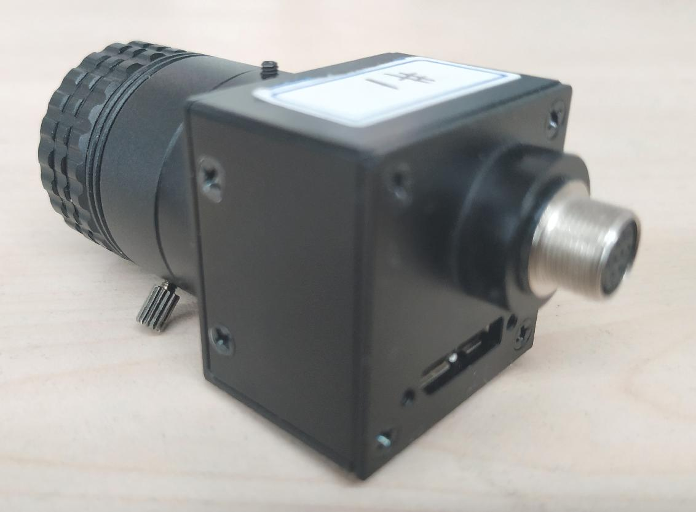
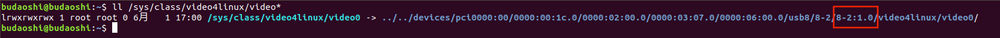

基于摄像头的封闭园区自动驾驶搭建–感知设备集成¶
前提条件¶
完成了循迹搭建–车辆循迹演示
概览¶
该用户手册旨在帮助用户完成摄像头感知设备(Camera)的安装、集成及数据验证。
摄像头型号说明¶
摄像头型号：LI-USB30-AR023ZWDR（leopard 摄像头）。
摄像头LI-USB30-AR023ZWDR采用标准USB 3.0接口，由Leopard Imaging Inc.制造。该系列产品基于AZ023Z 1080P传感器和安森美半导体的AP0202 ISP。它支持外部触发和软件触发。
建议使用两个带 6mm镜头的摄像头和一个带 12mm镜头的摄像头，以达到所需的性能。
更多详细参数可参考：leopard数据手册。
摄像头安装配置与数据验证¶
注意 针对Standard、Advanced用户，默认已经对相机进行了安装和集成，直接从摄像头的启动这一章节开始进行数据的验证即可
相机的安装固定¶
牢固安装在小车结构架前端横梁处，水平安装，俯仰角向下0-2度（向下倾斜小于2度，不能上仰），翻滚角误差±1度（左右两侧的平齐程度），航向角误差±2度，镜头保持清洁，避免影响图像采集。安装位置如下图所示：

注意摄像头不要装反(usb接口应该在下方)，正确的放置方向如下图所示：

摄像头与工控机连接¶
直接用数据线将设备连接在IPC的USB3.0接口。接口顺序无固定顺序，用户可自行指定。

摄像头规则文件的配置¶
摄像头规则文件的作用是，当linux启动时，根据规则文件设置的规则，自动生成对应的软链接文件。
在docker环境外，执行如下命令，创建并编辑相机规则文件
sudo vim /etc/udev/rules.d/99-webcam.rules
根据自身情况，修改rules文件，摄像头的rules文件示例如下所示(这里只包含了两个摄像头的规则文件，如需用到3个摄像头，可参照格式自行添加)：
SUBSYSTEM=="video4linux", SUBSYSTEMS=="usb", KERNELS=="2-1:1.0", ATTR{index}=="0", MODE="0666", SYMLINK+="camera/front_6mm", OWNER="apollo", GROUP="apollo" SUBSYSTEM=="video4linux", SUBSYSTEMS=="usb", KERNELS=="2-2:1.0", ATTR{index}=="0", MODE="0666", SYMLINK+="camera/front_12mm", OWNER="apollo", GROUP="apollo"
其中，第一条代表连接到USB端口号为2-1:1.0的摄像头对应的软链接文件为camera/front_6mm；第二条代表连接到USB端口号为2-2:1.0的摄像头对应的软链接文件为camera/front_12mm。
查看摄像头所接的USB端口对应的端口号方法：在docker环境外执行如下命令
ll /sys/class/video4linux/video*
摄像头端口号如下图所示 
在docker环境外，执行如下命令，使配置的规则文件在本地系统生效:
bash ~/apollo/docker/setup_host/setup_host.sh sudo reboot //重启工控机
摄像头的启动¶
1. 检查摄像头是否被系统识别¶
在摄像头与工控机正常连接的基础上，执行
ls /dev/video*指令，查看摄像头是否被识别， 如果摄像头设备已经被识别，则会显示以video开头的设备名称，否则的话，请检查摄像头与工控机的连线是否可靠。在linux系统终端中输入
cheese命令，打卡cheese工具查看图像是否正常输出。注意设置正确的相机分辨率。在屏幕左上角选择cheese->preferences->webcam来设置分辨率。开发套件相机默认的分辨率为1920*1080
2. 检查是否存在摄像头软连接文件¶
检查/dev/camera目录是否存在，以及该目录下front_6mm、front_12mm两个软链接文件是否存在(根据规则文件配置不同，可能有1个或多个软链接文件)。如果使用ls /dev/video*命令能显示摄像头设备，但不存在软链接文件或者没有camera文件夹，请参照上文摄像头规则文件的配置章节，检查规则文件是否配置正确。
3. 编译项目，启动Dreamview¶
进入docker环境，用gpu编译项目，启动DreamView
cd /apollo
bash docker/scripts/dev_start.sh
bash docker/scripts/dev_into.sh
bash apollo.sh build_opt_gpu
bash scripts/bootstrap.sh
4. 启动camera模块¶
在浏览器中打开
(http://localhost:8888)，选择模式为Dev Kit Debug， 根据车辆铭牌信息选择对应的车型(详情见下表)，在Module Controller标签页启动Camera模块铭牌信息
车型选择
Apollo D-KIT Lite
dev_kit
Apollo D-KIT Standard
dev_kit_standard
Apollo D-KIT Advanced(NE-S)
dev_kit_advanced_ne-s
Apollo D-KIT Advanced(SNE-R)
dev_kit_advanced_sne-r

之后在
Tasks标签栏下依次打开SimControl和Camera Sensor开关，Camera Sensor打开后，务必关闭SimControl。开关在dreamview界面的位置如下图所示：
5. 验证camera是否工作正常¶
如果一切正常，则会在
dreamview右下角出现摄像头采集的图像。在
docker环境内使用cyber_monitor工具，查看/apollo/sensor/camera/front_6mm/image、/apollo/sensor/camera/front_12mm/image是否有数据输出，且帧率是否稳定在15帧左右(关于cyber_monitor更详细使用，请参考CyberRT_Developer_Tools)。//输入如下命令启动cyber_monitor budaoshi@in_dev_docker:/apollo$ cyber_monitor
NEXT¶
现在，您已经完成摄像头感知设备集成，接下来可以开始基于摄像头的封闭园区自动驾驶搭建–感知设备标定
常见问题¶
1. 规则文件修改后不显示软连接¶
规则文件修改后需要重启工控机才能生效